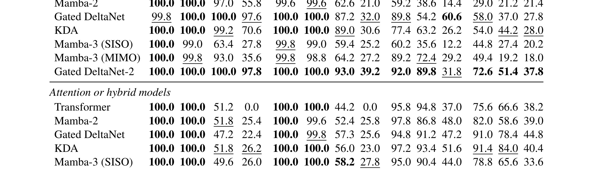

这里重写精读 NVIDIA 的《Gated DeltaNet-2: Decoupling Erase and Write in Linear Attention》。论文入口：arXiv:2605.22791。作者为 Ali Hatamizadeh、Yejin Choi、Jan Kautz，机构 NVIDIA。代码仓库本轮可访问：https://github.com/NVlabs/GatedDeltaNet-2。本文关注 recurrent linear attention 的状态更新，核心是把 erase gate 和 write gate 解耦，让固定大小记忆更稳定地编辑旧信息并写入新信息。
1. 背景和问题
长上下文大模型的主流方案仍然依赖 softmax attention 和 KV cache，但上下文长度增加会带来训练和推理成本上升。线性注意力、状态空间模型和 recurrent attention 试图用固定大小状态替代随序列增长的 attention matrix，从而让长序列吞吐更稳定。问题是，固定状态本质上是一种压缩记忆：模型必须决定哪些旧关联应该被擦除，哪些新信息应该写入。如果状态更新不够精细，模型要么忘得太快，要么新旧信息互相覆盖。 DeltaNet 和 Gated DeltaNet 属于 fast-weight / linear attention 路线。它们把历史 key-value 关联写入一个状态矩阵，后续 token 通过 query 从状态中读取信息。已有 delta rule 通常用一个 gate 同时控制 erase 和 write，这在直觉上并不合理：擦除旧 key-side association 和写入新 value-side content 是两个不同动作。比如当前 token 可能需要强烈擦除某些旧关联，但只写入少量新值；也可能需要保留旧关联，同时写入补充信息。用一个 scalar gate 同时控制二者，会限制状态编辑能力。 Gated DeltaNet-2 的核心问题就是这个耦合。论文提出 Gated Delta Rule-2，用 channel-wise erase gate $b_t$ 和 channel-wise write gate $w_t$ 分别控制两个动作。它还结合 KDA 的 channel-wise decay，并推导 chunkwise WY algorithm 和 gate-aware backward pass，让训练仍然可以并行。这个工作不是 KV cache 压缩，也不是简单换一个长上下文 benchmark，而是改 recurrent linear attention 的基本状态更新算子。 对推荐系统也可以类比理解。用户序列建模里常有“旧兴趣擦除”和“新兴趣写入”：用户临时看了某类内容，不代表长期兴趣全部改变；用户长期偏好也不应被一次点击完全覆盖。如果序列模型用单一门控同时控制忘记和写入，就可能出现兴趣漂移。Gated DeltaNet-2 虽然是 LLM 架构论文，但它提出的 erase/write 解耦思想对序列推荐和长行为建模也有启发。
线性注意力路线常被概括为“复杂度更低”，但真正难点是记忆质量。固定大小状态意味着所有历史都被压缩进有限矩阵，长序列越长，冲突越多。Softmax attention 虽然贵，但它保留显式 token-token 关系；recurrent linear attention 便宜，却必须持续编辑同一个状态。Gated DeltaNet-2 的贡献应该放在这个背景下看：它不是把复杂度从二次降到线性这么简单，而是在问固定状态如何更像可控记忆。 这种问题在长上下文推理中非常具体。Needle-in-a-haystack、多键检索、长文 QA 都要求模型在大量干扰信息中保留少量关键关联。如果写入新 token 时覆盖旧 key，模型会忘记早期 needle；如果擦除太弱，状态会积累噪声。解耦 erase/write 是对这个矛盾的直接回应。
补充背景：这篇论文处在一个很明确的张力里：Transformer 的 KV cache 能精确保留上下文，但长序列成本高；线性注意力和 recurrent 模型能固定状态推理，但容易丢失或覆盖细节。Gated DeltaNet-2 不是简单声称“线性注意力替代 Transformer”，而是把问题缩小到状态更新规则：当一个新 token 到来时，模型到底应该擦除旧关联、写入新关联，还是同时做两件事。把这个动作拆开，是它相对一代 Gated DeltaNet 的关键变化。
2. 方法
2.1 Gated Delta Rule-2：把状态更新拆成 erase 和 write
Gated DeltaNet-2 的方法核心是状态编辑规则。在线性注意力或 fast-weight 视角下，模型维护一个固定大小状态矩阵 $S_t$，每个 token 提供 query、key、value。读取和旧值估计可以写成：
符号解释：$q_t$ 是当前 token 的 query；$k_t$ 是写入或检索地址；$v_t$ 是目标 value；$S_{t-1}$ 是上一时刻的 fast-weight 状态；$o_t$ 是从状态读出的输出；$\bar{v}_t$ 是沿当前 key 读到的旧 value。普通 delta rule 会用 $v_t-\bar{v}_t$ 修正状态，但一个 gate 同时控制“删旧内容”和“写新内容”会过粗。
Gated Delta Rule-2 的直觉更新可以写成：
符号解释：$b_t$ 是 erase gate，决定沿当前 key 方向删除多少旧关联；$w_t$ 是 write gate，决定新 value 写入多少；erase 和 write 分开后，模型可以只擦除、不强写，也可以保留旧关联并补充新内容。这对多键检索很关键，因为固定状态模型最容易在写入新信息时覆盖旧 key-value association。
2.2 Hybrid block：recurrent mixer 负责长程，SWA 负责局部精确
论文没有把 recurrent linear attention 当成万能替代。Hybrid block 中既有 Gated DeltaNet-2 token mixer，也保留 sliding-window attention。这个组合对应两个职责：Gated DeltaNet-2 用固定状态压缩长程信息，SWA 处理窗口内精确 token 交互、格式、短距离指代和局部语法。若完全移除局部 attention，长上下文任务可能更强，但普通语言建模和细粒度复制会受损。

Figure 1 的价值就在这里：它说明方法不是简单堆一个新 gate，而是在 block 设计中安排 long-range recurrent state 与 local attention 的分工。左侧 hybrid stack 把 SWA 与 Gated DeltaNet-2 交替使用，右侧 block diagram 展示 token 先经过归一化和线性投影，再进入 gated delta rule 的状态更新，最后与 MLP 等组件组合成完整层。读这张图时要抓住两条信息流：一条是局部窗口内的 attention，它保证模型还能处理相邻 token 的精确依赖；另一条是 recurrent state，它把更远的 key-value association 压缩进固定状态并持续编辑。
这张方法图还解释了为什么 erase/write 解耦必须进入 block 级设计，而不是只作为训练技巧出现。若 token mixer 的状态更新仍然粗糙，SWA 只能补局部短距，无法修复长程覆盖；若完全依赖 recurrent mixer，又会丢掉局部 copy 和短距离格式控制。对推荐序列建模，类似分工也成立：长期兴趣状态可以由可编辑状态维护，短期会话内精确行为仍需要局部 attention 或短窗特征。把 Figure 1 放回方法章后，可以更清楚地看到论文的贡献链条：公式定义可编辑状态，block 结构规定它与局部注意力如何共存，后续实验再验证这种组合能同时保留普通语言能力、长程检索能力和训练吞吐。
2.3 Chunkwise WY 和 gate-aware backward
Recurrent 更新天然适合推理，但训练如果逐 token 循环，就很难和 Transformer 公平比较。论文因此推导 chunkwise WY，把一段 token 的更新合并成可并行计算的矩阵形式；gate-aware backward 则保证 erase/write gate 的梯度能正确传播。这个部分决定方法是否能在 100B token 级别训练，而不是只停留在公式。
复现时要把架构和 kernel 一起检查：chunk size、归一化位置、混合精度、Triton/CUDA kernel、backward 中 gate 的依赖关系都会影响结果。若只用 Python for-loop 复现，吞吐结论没有意义；若只跑 kernel 而不做 RULER 多键检索，无法证明 erase/write 解耦真的改善了状态记忆。
2.4 边界和迁移
这篇论文的边界也清晰：实验规模是 1.3B 和 100B tokens，距离更大 dense/MoE 模型还有距离；serving 生态也不如 Transformer KV cache 成熟。工程上应同时看普通语言建模、长上下文、多键检索和吞吐，不能只看单个 benchmark。若迁移到用户行为序列，最值得借鉴的是“删除旧兴趣”和“写入新兴趣”分开建模，尤其适合负反馈、兴趣转移和多兴趣保留。
把方法落到实现层时，我会把检查点拆成三类。第一类是状态更新正确性：erase gate 和 write gate 是否分别作用在旧关联删除与新 value 写入上，gate 的维度是 scalar、head-wise 还是 channel-wise，归一化是否改变状态尺度。第二类是 block 组合：SWA 的窗口长度、Gated DeltaNet-2 层的位置、MLP 比例和 residual 路径都会影响普通语言建模，不应只复现公式。第三类是训练 kernel：chunkwise WY 和 gate-aware backward 必须通过梯度一致性测试，否则看似同一个公式，实际训练出的模型可能完全不同。方法章的两条公式、Figure 1 的 block 图和后续吞吐图共同说明，这篇论文的贡献同时发生在算子、网络层和系统实现三个层面。
3. 实验结果
3.1 实验设置
论文训练 1.3B 模型，数据为 100B FineWeb-Edu tokens。比较对象包括 Mamba-2、Gated DeltaNet、KDA、Mamba-3、Transformer/hybrid variants 等。评估覆盖语言建模、常识推理、RULER needle-in-a-haystack、多键检索、真实检索任务和吞吐。这个设置能同时回答三件事：模型质量是否足够、长上下文记忆是否改善、效率是否保留。
3.2 语言建模与常识推理

Table 2 现在单独裁出，不再与 RULER 表合在一起。表中比较 Pile、LAMBADA、PIQA、WinoGrande、ARC、HellaSwag 等指标。Gated DeltaNet-2 在平均表现上领先或接近最强，说明 erase/write 解耦没有只优化某个长上下文测试，而是在普通语言建模和常识推理上也保持竞争力。对于新架构论文，这一点很关键：如果长上下文提升是以普通任务显著退化为代价，工程价值会下降。表中多个任务共同出现，也能防止只挑单一长上下文指标讲故事；读者应同时关注平均值和弱项任务，确认模型没有用牺牲常识推理换取记忆任务分数。
Table 2 应作为基础能力检查：如果 erase/write 解耦只提升长上下文，却显著损害普通语言建模、常识推理或短任务表现，这个架构就很难作为通用 LLM backbone。表中多任务结果说明作者至少没有只针对 RULER 做单点优化。
3.3 RULER 与多键检索

Table 3 单独呈现 RULER needle-in-a-haystack 相关结果，尤其是多键检索。这里最能体现 erase/write 解耦价值：固定状态模型必须在长序列中保留多个 key-value 关联，如果写入新信息时覆盖旧 key，或者擦除不够精确，多键 retrieval 会失败。Gated DeltaNet-2 在这类任务上优势更明显，说明它改善的是状态记忆质量，而不只是平均困惑度。尤其多键检索要求模型同时保留多个地址和值，最容易暴露单 gate 更新的覆盖问题；因此这张表比普通 perplexity 更能检验 erase/write 解耦是否真的有效。
Table 3 才是机制检验重点：多键 needle-in-a-haystack 会持续向同一固定状态写入多个 key-value 关联，最容易暴露覆盖和遗忘问题。Gated DeltaNet-2 在这里的优势更能支持 erase gate 与 write gate 分离的必要性。
3.4 吞吐与效率

Figure 2 已重裁为单独吞吐曲线，不再包含正文段落和 caption。图中横轴为序列长度，纵轴为 single H100 training throughput。Transformer 随长度增加吞吐下降更明显，而 Gated DeltaNet-2 类 recurrent/hybrid 模型保持更平缓。这是 fixed-state linear attention 的核心工程卖点：长上下文成本不随序列长度二次增长。结合前两张表看，Gated DeltaNet-2 的价值在于没有把效率和质量完全对立起来。
Figure 2 补上效率维度：如果状态更新更精细但训练吞吐接近 Transformer 的长序列瓶颈，方法价值会下降。吞吐曲线显示 recurrent/hybrid 路线在长序列下更平缓，因此 Table 2、Table 3 和 Figure 2 合起来才构成完整证据链。
3.5 消融与边界
消融说明 gate 形式、erase range 和 hybrid 配置都会影响结果。把 gate 压成 scalar 或改变擦除范围会削弱性能，支持作者关于 erase/write 解耦的判断。不过实验规模仍是 1.3B 与 100B tokens，距离更大 dense/MoE 模型还有差距。另一个边界是 serving 生态：Transformer 有成熟 KV cache、FlashAttention、vLLM/SGLang 支持，而 recurrent linear attention 需要新的 kernel 和 runtime。即使论文代码可访问，生产部署仍要看推理框架是否跟进。
3.6 语言任务与长上下文任务要一起看
如果一个架构只在 RULER 强，但普通语言建模差，说明它可能只是对特定合成任务过拟合。Gated DeltaNet-2 同时给出 Pile/LAMBADA/常识推理和 RULER，读法更完整。Table 2 证明基础能力，Table 3 证明长程记忆，Figure 2 证明效率。三者缺一不可。
3.7 吞吐图的边界
吞吐图显示 recurrent/hybrid 架构在长序列下更平缓，但训练吞吐不等于端到端 serving 成本。真实推理还涉及 batch、prefill、decode、KV 或 recurrent state 管理、框架支持。若 serving 框架不支持高效 recurrent state，理论效率可能无法兑现。因此后续要看 vLLM、SGLang 或专用 runtime 是否跟进。
3.8 读表顺序
我会按 Table 2、Table 3、Figure 2 的顺序读实验。Table 2 说明新架构没有牺牲普通语言建模和常识推理；Table 3 说明它在长上下文、多键检索上确实改善固定状态记忆；Figure 2 再说明这种改善没有用明显吞吐损失换来。若只看其中一个表，都可能误判：长上下文强但普通任务弱，不适合作为通用 LLM backbone；吞吐强但质量差，只是系统技巧；质量强但吞吐差，则失去 linear attention 的意义。
3.9 消融该怎么看
消融中最值得看的是 gate 粒度和 hybrid 配置。若把 channel-wise gate 简化成 scalar，模型会失去按维度编辑状态的能力；若移除 SWA，局部精确匹配会变弱；若改变 erase range，多键检索会直接受影响。这些消融指向同一个结论：Gated DeltaNet-2 的收益不是来自参数量或训练数据，而是来自状态更新结构。后续若有更大模型结果，也应继续要求同样的消融，否则很难确认机制是否还成立。
4. 总结
4.1 我的判断
Gated DeltaNet-2 的关键贡献是把固定状态记忆中的“擦除”和“写入”拆开。它不像 KV cache 剪枝那样事后管理缓存，而是在模型更新规则中提升记忆编辑能力。对长上下文 LLM，这是一个值得跟踪的架构方向。
4.2 工程启发与复现建议
复现应先读 NVlabs 仓库中的 gate-aware backward、chunkwise WY 和 block 配置，再比较相同 tokenizer、数据和训练预算下的 Mamba-3/KDA/Transformer hybrid。不要只跑 RULER；还要跑普通语言建模、常识推理、长文 QA 和真实检索任务。若用于推荐序列建模，可以尝试把用户兴趣状态的遗忘和写入分开建模。
4.3 局限与后续跟进
局限包括：规模尚未证明到更大模型；精确复制能力仍需 SWA 辅助；训练复现成本高；serving 支持不成熟。后续应关注更大模型结果、与 Kimi Linear/Mamba-3 的公平比较、推理框架支持，以及该 erase/write 机制是否能迁移到用户行为序列或长期记忆模块。
4.4 我会如何复现
我会先用仓库跑小规模 sanity check：同一数据、同一 tokenizer 下比较 Gated DeltaNet、KDA、Gated DeltaNet-2；再单独替换 erase/write gate 看 RULER 多键任务变化；最后测不同序列长度的吞吐。只有同时复现质量和效率，才算验证论文主张。
4.5 后续问题
需要跟踪更大模型、MoE 版本、真实长文 QA、代码任务、serving kernel 和与 Kimi Linear/Mamba-3 的公平对比。如果这些结果成立，erase/write 解耦可能成为 recurrent linear attention 的标准组件。
4.6 后续观察清单
后续最值得看的是三件事：更大规模模型是否仍然保持质量与吞吐平衡；vLLM、SGLang 或专用 runtime 是否支持高效 recurrent state serving；erase/write 解耦是否能迁移到非语言序列，例如用户行为、代码执行轨迹和长期 Agent memory。若这三点都成立，它就不只是一个长上下文 benchmark 技巧，而可能成为固定状态模型的标准更新单元。